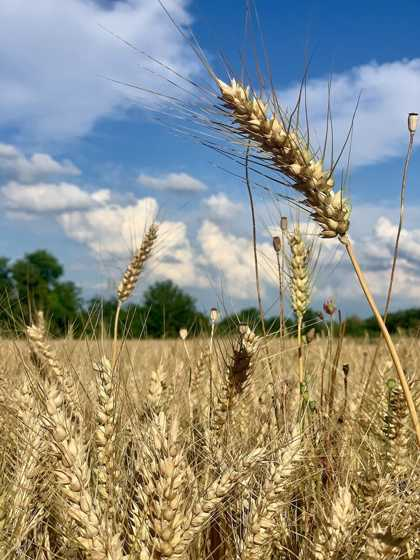

天然酵母のパン / 長野県安曇野市穂高
petit à petitBoulangerie プティ・タ・プティ
一歩一歩、ゆっくりと。国産小麦と天然酵母が、時間をかけてふくらむように。
お店のことInstagramABOUT
一歩ずつ、季節に合わせて
お店の名前「petit à petit(プティ・タ・プティ)」は、フランス語で「一歩一歩」「少しずつ」を意味するとご紹介されています。住宅街にある小さなパン屋で、国産小麦と天然酵母を使い、地元の食材を使ったパンも並ぶと紹介されています。


天然酵母は暑さで発酵が弱まるため、取材記事では梅雨明け頃から9月中旬頃までお休みとされていました。急がず、酵母のペースに合わせる姿勢が、店名の「一歩一歩」と重なって見えます(この重ね方は制作側のイメージです)。
店名の意味・製法・夏のお休みは取材記事の内容です。創業の経緯やオーナーの想いは確認できていません。内容は変わっている場合があります。
BREAD
並ぶパン
ベーグル
ほしの天然酵母を使ったベーグルが看板商品と紹介されています。取材記事では、甘夏ミルクティー、いがくるみ、とってもチョコ、ブルーベリーとクリームチーズなどが挙げられていました。
食パン・クッペなど
角型食パン、レーズンクッペ、シフォンケーキなども販売されているとの情報があります。
価格・その日のラインナップ
準備中 最新はInstagramをご確認ください。
写真はフリー素材のイメージで、実際の商品ではありません。


VOICE
口コミ(イメージ例)
イメージ例
もちっとしたベーグルで、噛むほど小麦の味がしました。季節のフレーバーが楽しみです。
イメージ例
住宅街の静かなパン屋さん。ゆっくり選んでいたら、ついあれもこれもと買ってしまいました。
イメージ例
天然酵母のやさしい香りでほっとします。朝ごはん用の食パンをまた買いに行きます。
上記は制作側が作成した創作で、実在のお客様の声ではありません。





ACCESS
アクセス
| 住所 | 〒399-8303 長野県安曇野市穂高2875-8 |
|---|---|
| 電話 | 準備中 |
| 営業時間 | 準備中(以前の記事では金・土の昼過ぎから夕方とされていました。最新はInstagramで) |
| 定休日 | 準備中 |
| @petit_a_petit926 |